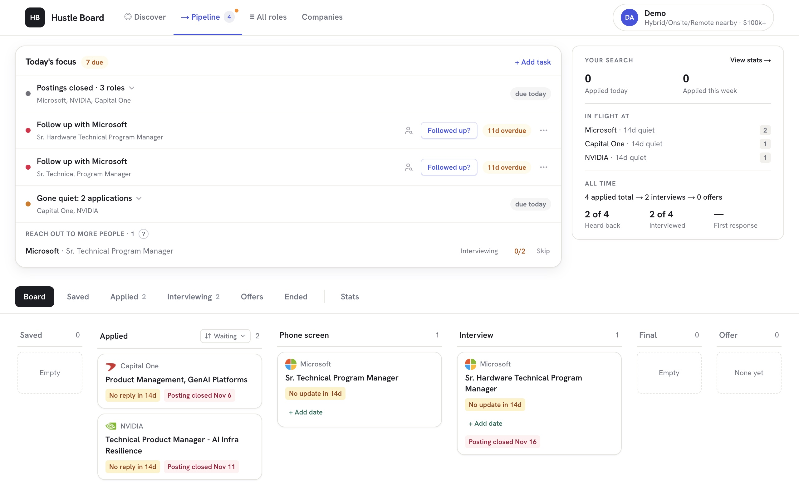

Decision 1
I built the daily workflow before the AI.
- What I observed
- The immediate problem was knowing what I had applied to, who needed a follow-up and which roles were going stale.
- What I chose
- Build the pipeline and daily priorities first. That workflow is useful from day one and gives people a reason to return each morning.
- Tradeoff
- The AI features came later.
- What I'll measure
- Return usage: whether people keep coming back to the pipeline.
